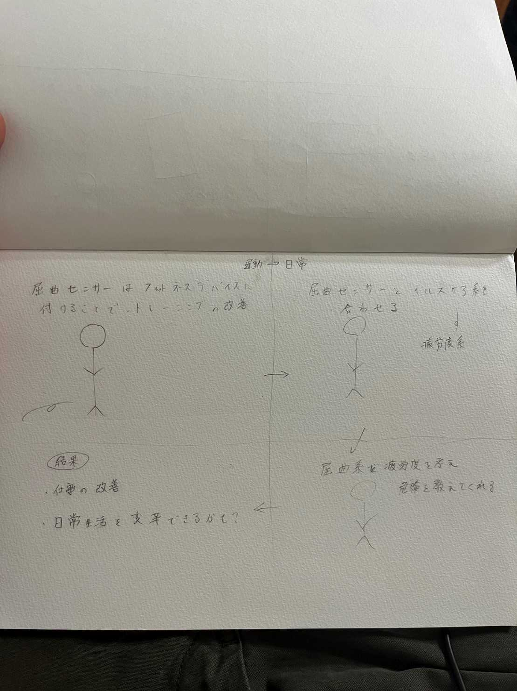

班の意見ではチャットGDPを使いながらまずIotのセンサーで何があるのかを調べたところ
加速度センサー、超音波、液面、動体、磁気、屈曲など色々なセンサーがあげれました。
ですが、センサーの名前と何をするセンサーなのかわからなく、すこし違うものもあります。
超音波の内容についてはたくさんの意見が出ました。
2,自分の考えたスケッチ

屈曲センサーはトレーニングの改善などに使われていて、それを利用して
ヘルスケア系のもの（疲労度）がわかったりするものを合わせる。
その結果仕事の改善や日常生活を変えることができると思いました。
なぜこの案を思いついたのかというと、普段かぜなんかひかない友達が、
数日間働きすぎて倒れこんだことがあったからです。
もう一つ考えたのは、アップルウォッチのようなセンサーの中に
超音波のセンサーを合わせて、自分の体の中身を見れるようになったらいいなと思い
このような案を考えました。